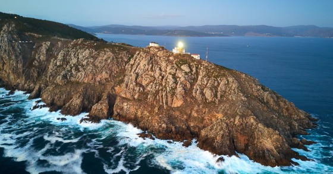
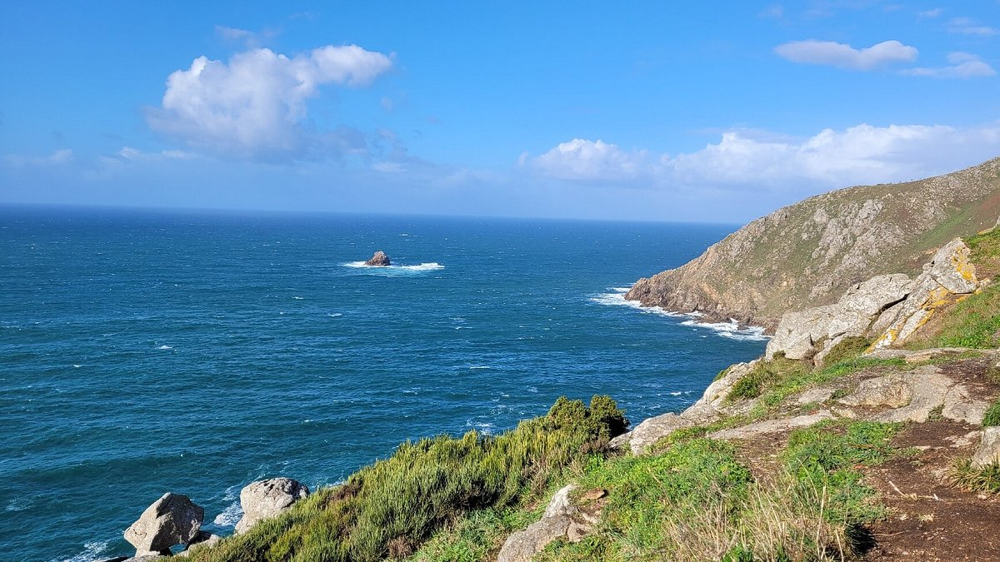
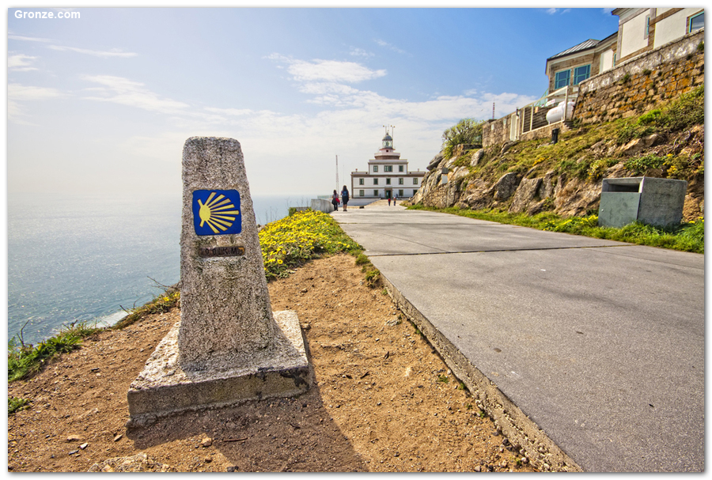

Lendas
Cabo Fisterra: o fin do mundo



Ficha rápida
- Lugar: Cabo Fisterra (A Coruña).
- Orixe do nome: Finis Terrae, en latín, significa "o fin da terra".
- Mito: Durante séculos críase que máis alá de Fisterra só existía o océano infinito.
- Curiosidade: Antes dos romanos, os pobos celtas xa consideraban este cabo un lugar sagrado e rendían culto ao sol no Ara Solis.
A lenda
Vou facer o exercicio de poñerme na pel de alguén que vivía hai dous mil anos. Sen mapas, sen internet e sen saber que existían outros continentes. Creo que, se chegase por primeira vez a Fisterra, tamén pensaría que máis alá xa non había nada.
Ao final é fácil entendelo. Tes diante un cantil enorme, o océano esténdese ata onde alcanza a vista e o sol acaba desaparecendo na auga. Normal que os romanos lle puxesen o nome de Finis Terrae, o fin da terra.
Pero o curioso é que moito antes ca eles, os pobos celtas xa consideraban este lugar sagrado. Aquí estaba o Ara Solis, un altar dedicado ao sol onde celebraban rituais durante o atardecer.
Creo que esa é a parte que máis me gusta de Fisterra. Hoxe sabemos perfectamente que a Terra non remata alí, pero, cando ves un solpor desde ese cabo, durante uns segundos é fácil esquecer todo o que sabes e entender por que tanta xente chegou a pensalo.
E agora tamén entendo un pouco mellor por que hai tantos peregrinos que deciden seguir camiñando despois de chegar a Santiago. Escribir esta entrada ata conseguiu que me entrasen ganas de facer o Camiño algún día e rematalo precisamente en Fisterra.
Creo que non hai un sitio mellor para sentir que pechas unha etapa e, ao mesmo tempo, que estás empezando outra. Como se todo pechase.
Bibliografía
¿Por qué dicen que Finisterre es el fin del mundo? (s. f.). Tu Buen Camino.
https://tubuencamino.com/blog/por-que-dicen-que-finisterre-es-el-fin-del-mundo/